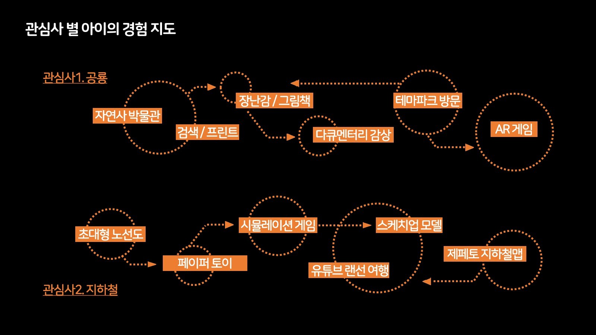
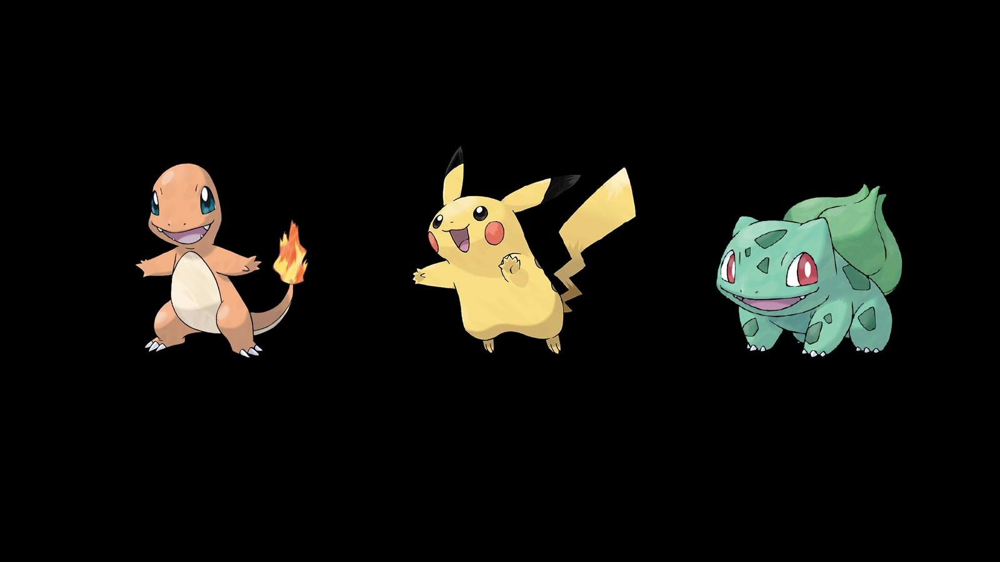
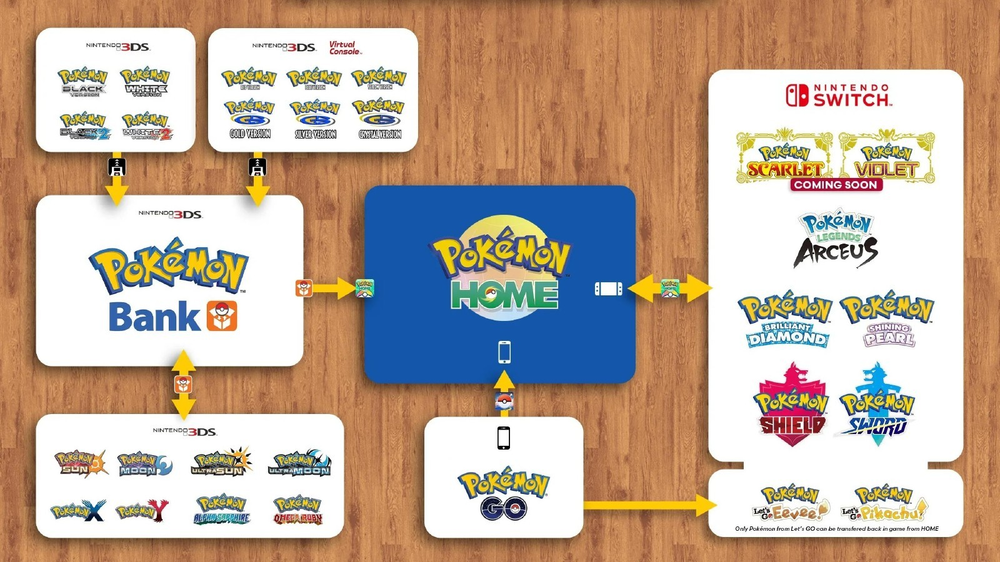
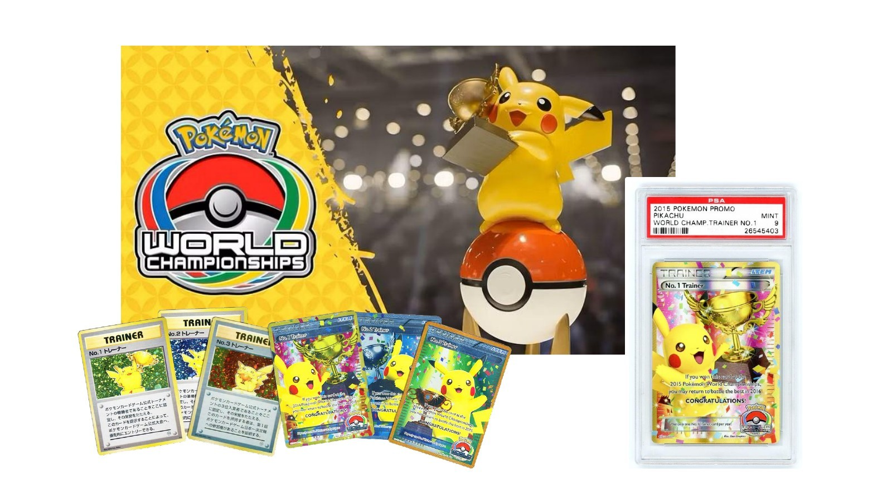
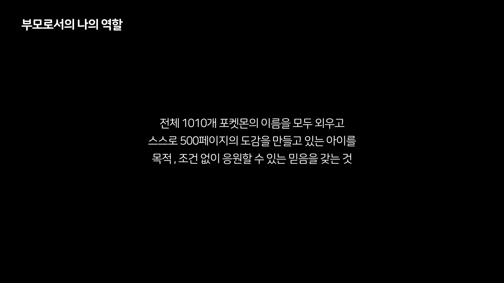

시리즈 안내 : 이 글은 세 편 가운데 두 번째다. 1편은 「낯선 세계, 부모가 먼저 들어간다」, 2편은 「포켓몬 아저씨, 홀로 하던 것이 함께가 되기까지」, 3편은 「계획과 실행 사이」로 이어진다. 이 시리즈는 2023년 10월의 한 발표와, 그 발표를 준비하며 만든 문서들을 3년 뒤에 다시 읽은 것이다.
발표 자료의 두 번째 장에 나를 여섯 줄로 소개했다. 첫 줄이 포켓몬을 좋아하는 아이의 아빠다. 하는 일도 지나온 경력도 그 아래에 놓았다. 같은 문장을 네 번째 장과 다섯 번째 장에 한 번 더 띄웠으니, 한 줄을 세 장에 걸쳐 세 번 보여준 셈이다.
세 번째 장은 그날의 차례였다. 파트1은 아이와 '( )'과 나, 파트2는 아이와 '포켓몬'과 나, 파트3은 부모로서의 미래의 나. 파트1의 괄호는 비워 둔 채로 시작했다. 그 아래에 파트마다 화자의 이름표를 따로 달았는데, 셋 가운데 둘은 슬라이드 위에서 내가 직접 동그라미로 가려 두었다. 가리지 않은 하나가 포켓몬 좋아하는 아저씨다. 이 글의 제목은 거기서 가져왔다.
이 글이 다루는 것은 그 가운데 파트2다. 파트1의 이야기는 1편에서, 파트3과 그날의 질의응답은 3편에서 다룬다.
이 글이 딛는 것은 네 벌이다. 그날의 발표 자료, 그것을 준비하며 쓴 원고의 초안과 최종본, 그리고 그 시절에 실시간으로 적어 둔 소셜 계정의 게시물이다. 앞의 셋은 발표를 향해 만든 것이고 마지막 하나는 발표와 무관하게 그냥 쌓인 것인데, 이 글에서 가장 많은 것을 말해 주는 쪽은 대체로 마지막이다.
그런데 같은 자기 소개를 원고에서는 지웠다. 여섯 줄이 아니라 스무 줄이었던 초기 자기 소개 전체에 취소선을 그었고, 포켓몬을 좋아하는 아이의 아빠도 그중 한 줄이다. 슬라이드에는 세 번 띄우고 원고에서는 지운 셈이다. 두 사료가 어긋나 있고, 어긋난 자리가 이 글의 2절이다.
01혼자 걸어 다닌 2016년
포켓몬 고가 나온 것은 2016년 여름이다. 그해에 나는 혼자 테마파크를 돌았다. 발표를 준비하며 쓴 원고에 그 대목을 이렇게 적었다. 포켓몬고 출시 직후인 2016년 나홀로 테마파크 투어. 디즈니 리조트에는 어떤 포켓몬이 살고 있을까. 홍콩, 도쿄, 상하이, 파리. 그리고 한 줄을 더 붙였다. 외롭고 처절했던 시간들.
이 다섯 줄은 초안과 최종본이 한 글자도 다르지 않다. 발표를 준비하면서 여러 대목을 고치고 지우고 다시 썼는데 이 대목만은 손대지 않았다.
그 시기의 기록은 소셜 계정에 두껍게 남겼다. 디즈니라는 말이 들어간 게시물이 117건인데, 2015년에 27건, 2016년에 25건으로 그 두 해가 가장 많다. 포켓몬고는 32건이다. 포켓몬 센터를 다녀와 적은 것도 2016년에 두 번 있다.
다만 그때 내가 무슨 일을 하고 있었는지는 건수보다 문체가 더 정확하게 말해 준다. 2016년 7월의 게시물을 나는 이렇게 열었다. 최근 증강현실 기반의 게임 포켓몬고가 인기를 끌고 있는 가운데 새롭게 조명되는 플레이스테이션의 인비지멀. 좋아하는 사람의 말투가 아니라 살펴보는 사람의 말투다. 그 무렵 나는 테마파크를 만드는 일을 하고 있었고, 도시를 옮길 때마다 그 게임을 켰다. 혼자인 것은 맞지만 그 혼자는 취미의 혼자가 아니라 일의 혼자였다. 그해 여름의 투어도 게임 때문에 간 것이 아니라 일 때문에 갔고, 게임은 그 위에 얹혔다. 다만 얹힌 쪽이 오래 남았다. 이 게시물은 5절에서 한 번 더 나온다.
원고에는 그 시절에 모은 것들의 목록도 적었다. 레벨업된 계정, 포켓몬, 스킬, 아이템, 트로피. 그 목록의 첫 줄이 업어서 키운 망나뇽이다. 영화 관람 후 획득한 레벨100 아르세우스가 그다음이고, 돈주고도 못구하는 리미티드 아이템들이라는 항목 아래 크라우드 펀딩으로 산 팬북과 구매 대행으로 들여온 물건들을 적었다. 나는 그것들을 전리품이라고 불렀다.
전리품이라는 낱말은 발표를 준비하면서 고른 말이 아니다. 소셜 계정에서 그 낱말을 쓴 게시물이 여섯 건인데 2014년부터 2022년까지 흩어져 있다. 목록을 보면 사서 모은 것과 걸어서 얻은 것을 한자리에 섞어 놓았다. 계정과 레벨은 시간을 들여야 나오고 팬북과 피규어는 돈을 들이면 나오는데, 원고에서는 둘을 나누지 않았다.
망나뇽 이야기는 원고에만 있다. 소셜 계정의 게시물 8천여 건을 전부 훑어도 그 이름을 적은 것이 한 건도 없다. 몇 해를 데리고 다닌 포켓몬인데 실시간으로는 한 번도 쓰지 않았고, 발표를 준비하던 2023년에 와서야 목록의 첫 줄로 올렸다. 그때그때 적어 둔 것과 나중에 골라낸 것이 같지 않다는 사실은 이 시리즈에서 여러 번 나온다.
원고에서 이 대목에 붙인 제목은 포켓몬고에 대한 추억이고, 투어를 부른 이름은 나홀로 투어다. 혼자라는 말을 제목에 넣은 자리는 파트2에서 여기뿐이다. 뒤에 오는 절들은 전부 함께 한 이야기다.
투어 이야기 바로 뒤에 아이와 함께 에버랜드를 처음 찾았던 날을 붙여 두었다. 그 줄에 적은 말은 아빠의 경험에 대한 추억 공유다. 그 첫 방문이 언제였는지는 아직 확인하지 못했다. 소셜 기록에 후보가 한 건 있지만 열어 보지 않았으므로 이 글에서는 연도를 쓰지 않는다. 순서만 원고가 말해 준다. 혼자 돌아다닌 다음에 함께 갔다.
02청중이 아이들로 바뀌었다
원고 최종본의 첫 줄은 발표 내용이 아니라 발표 조건이다. 아이들의 참석 소식이 전해짐에 따라 발표 내용의 방향을 완전 변경. 그 한 줄을 맨 앞에 적어 두고 나머지를 고쳤다.
초안에는 그 문장이 없다. 대신 여섯 항목이 있다. 누구를 위한 발제인가, 포켓몬의 유용성, 업무 연관성, 자기 계발, 아이와의 관계 증진, 성공의 대물림. 전부 어른에게 포켓몬을 설명하는 목록이다. 두 판을 나란히 놓으면 방향이 바뀐 자리가 그대로 보인다.
바뀐 정도는 취소선으로 셀 수 있다. 최종본에서 46줄에 취소선을 그었고, 초안에는 한 줄도 긋지 않았다. 세어 보면 취소선 표식이 92개이고, 표식의 쌍이 46개이고, 취소선이 들어간 줄도 46줄이다. 줄마다 정확히 한 쌍씩 그었다는 뜻이다. 그리고 46줄은 문서 곳곳에 흩어져 있지 않고 네 덩어리로 모여 있다. 자기 소개 스무 줄, 포켓몬 이름의 유래 다섯 줄, 포켓몬스터의 역사 열두 줄, 포켓몬 세계관의 특징 아홉 줄이다.
지운 것은 두 종류다. 하나는 나에 대한 이야기다. 어린 시절부터 자라온 배경, 공교육, 자발적 동기, 삶에 대한 가치관, 프리랜서로서의 삶, 가족과의 시간에 대한 우선순위, 초중고와 대학과 성인을 대상으로 교육 프로그램을 개발하고 실행한 경력, 그리고 교수법의 부재라는 한계. 다른 하나는 포켓몬에 대한 백과사전이다. 이름의 유래, 게임과 만화와 애니메이션의 역사, 세계관의 특징. 세 덩어리를 합치면 스물여섯 줄이다.
덩어리마다 성격이 조금씩 다르다. 이름의 유래 덩어리에는 한글 이름과 영어 이름과 일본 이름이 전혀 다를 수 있다는 줄, 재밌는 포켓몬 이름을 몇 가지 소개하겠다는 줄을 적었다. 역사 덩어리에는 1996년 게임보이 발매와 모노톤의 도트 그래픽, 더블 타이틀로 나온 두 판본, 케이블로 연결해 교환하던 기능, 관동지방 1세대 151마리, 캡슐몬스터라는 이름으로 출시됐을지도 모른다는 뒷이야기, 플랫폼 독점을 유지해 온 방침, 1997년에 시작한 만화와 애니메이션, 1998년의 첫 극장판까지 적었다. 세계관 덩어리에는 창작자의 어린 시절과 현실의 반영, 동물과 곤충과 기계, 곤충과 새와 동물이 없는 세상, 자연 관찰의 대상 같은 항목을 늘어놓았다. 어른 앞에서라면 한 시간은 말할 수 있는 분량이다.
남긴 것은 성격이 다르다. 자신이 알고 있는 포켓몬 이름 하나씩 말해보기. 그림 보고 이름 맞추기. 도감. 독특한 진화 조건. 게임의 발전. 포켓몬고의 추억. 카드 게임. 상속. 몰입. 부모의 역할. 아이들이 청중이 되자 어른에게 하는 말과 어른에게 하는 강의를 걷어내고, 그 자리에 함께 할 수 있는 것과 부모에게 남길 것을 놓았다.
다만 지운 것이 곧 없앤 것은 아니다. 세계관 덩어리에서 지운 항목 가운데 인간 외에는 모든 것이 포켓몬이라는 설정, 그리고 좋은 포켓몬과 안 좋은 포켓몬의 차등 없이 다양성을 존중한다는 줄은 발표 자료에 그대로 올렸다. 원고에서 뺀 것을 슬라이드에는 넣은 것이다. 그러니까 46줄은 폐기 목록이라기보다 유보 목록에 가깝다. 말로 길게 풀 자리를 없애고 화면에 한 줄로만 남겼다.
같은 최종본에 파트2의 설계 노트도 적었다. 파트2는 속도감과 지구력을 요하는 전개, 1500m 달리기의 느낌. 하나를 깊이 파는 것도 의미 있지만, 옆으로 넓어지는 것이 어디까지 가능한지를 보여주기 위함. 이 줄들도 초안에는 없다. 무엇을 말할지가 아니라 어떤 속도로 말할지를 적어 둔 셈인데, 발표의 리듬을 문서에 적어 놓은 것은 이 대목이 유일하다.
취소선을 언제 그었는지는 파일로 알 수 없다. 초안에 0줄, 최종본에 46줄이라는 사실만 남았다. 스무 줄짜리 자기 소개가 그날 어떻게 됐는지는 3편에서 다시 다룬다.


03지금 유용한 것이 나중에도 유용할까
파트2의 뒷부분에 질문을 한 장 띄웠다. 당장 유용해 보이는 관심사에는 열광하고, 그렇지 않은 것에는 불안감을 느끼는 부모. 하지만 지금 유용하다고 생각한 것들이 정말 아이들의 미래에도 여전히 유용할까.
이 장이 향하는 상대는 아이가 아니라 부모다. 문장의 주어가 부모이고, 불안감을 느끼는 쪽도 부모다. 아이들이 앉아 있는 방에서 부모를 향해 말하는 장을 파트2의 뒷부분에 놓았다.
원고에 처음 적었을 때는 낱말이 달랐다. 부모는 당장 써먹을만한 관심사에 열광하고, 그렇지 않은 것에는 불안감을 느낌. 그러나 당장 써먹을만한 것이 정말 아이들의 미래에도 유효할까. 써먹을만한을 유용해 보이는으로 바꿔 슬라이드에 올렸다. 뜻은 같고 온도만 내렸다.
이 두 줄은 초안에도 있다. 46줄을 지우고 방향을 통째로 바꾸는 동안 이 질문은 손대지 않았다. 어른을 앞에 두고 쓴 초안에서도, 아이들이 온다는 소식을 듣고 고친 최종본에서도 같은 자리에 있다. 발표에서 무엇을 바꿨는지를 보려면 지운 줄을 세면 되고, 무엇을 바꾸지 않았는지를 보려면 이런 줄을 찾으면 된다.
다음 장에 답 대신 조건을 적었다. 1000개 이상 포켓몬의 이름을 모두 외우고, 스스로 500페이지의 도감을 만들고 있는 아이를, 목적과 조건 없이 응원할 수 있는 믿음을 갖는 것. 두 숫자는 2023년 10월의 값이다. 지금의 값이 아니다.
이 두 장에서 내가 하지 않은 일이 하나 있다. 도감이 왜 좋은지를 설명하지 않았다. 이름을 외우는 것이 어떤 능력으로 이어지는지도 말하지 않았다. 유용성을 묻는 장 바로 다음에 유용성으로 답하면 앞 장이 무효가 되기 때문이다. 대신 응원할 수 있는 믿음이라고 적었다. 믿음은 근거를 대지 않아도 되는 말이고, 그 자리에는 그 말이 맞았다.
도입에 옮긴 그날의 말이 이 질문의 다른 판이다. 미래에 태어날 우리 아이가 좋아할 것이기 때문에 미리 좋아해야지, 라는 말은 지금 유용한지를 따지지 않은 자리에서 나온다. 나중에 유용할지 아닐지를 알 수 없으니 먼저 해 둔다는 쪽에 가깝다. 부모에게 그 질문을 던진 사람이 자기 앞에는 이미 그렇게 답해 두고 있었던 셈이다.
2절에서 지운 백과사전과 이 장은 같은 결정의 앞뒤다. 포켓몬의 역사를 열두 줄, 세계관을 아홉 줄로 설명하는 것은 이것이 알 만한 가치가 있다는 것을 증명하는 방식이다. 그 증명을 그만두기로 하면 남는 것은 증명 없이 응원하는 쪽뿐이다.
다만 전부를 지운 것은 아니다. 도감 항목과 독특한 진화 조건 항목에는 취소선을 긋지 않았다. 원고에서 도감은 열 줄, 진화 조건은 여섯 줄을 차지하는데 둘 다 그대로 발표했다. 남이 만든 백과사전은 지우고 집에서 만들고 있는 도감은 남긴 것이다.
이 두 장 바로 다음 장이 부모의 역할 네 줄이다. 질문을 던지고, 조건을 적고, 곧바로 할 일을 붙이는 순서로 놓았다. 그 네 줄은 4절에서 다룬다.
04개입이 아니라 배치
그날 발표의 중간에 슬라이드를 거의 쓰지 않는 구간을 하나 두었다. 10분 남짓이고, 그 사이 화면에는 파트 표제 한 장이 20초쯤 스쳤을 뿐이다. 그 표제에 적은 말은 우리가 일상에서 만나고 경험하는 포켓몬이다. 나머지 시간에는 집에서 가져간 물건들을 꺼내 보였다. 그 구간의 첫 이야기가 공룡이었다.
그날 발표에서 나는 이렇게 말했다. 우리가 인생에 두 번, 인생에 딱 두 번 공룡 이름을 달달 외우는 때가 있다고. 내가 어렸을 때, 그리고 아이가 어릴 때라고. 참석자 한 분의 말을 받아 이렇게 이었다. 우리가 130살을 살게 되면 내가 조부모가 돼서도 공룡을 한 번 더 외우게 되니 이게 4번이 될지 5번이 될지, 200살을 살면 5번이 될 수도 있다고. 그리고 한 문장으로 닫았다. 공룡은 아이가 어렸을 때 가장 먼저 좋아했던 관심사였던 것 같다고.
그 구간에서 나는 공룡으로 시작해 지하철로, 동물의 숲으로, 곤충으로, 비행기로 옮겨 갔다. 관심사는 계속 갈아탄다. 갈아타는 것을 막을 방법도 없고 막을 이유도 없다. 목록을 길게 늘어놓은 이유는 목록 자체가 아니라 그 아래에서 같은 방법이 반복된다는 것을 보이기 위해서였다. 도감을 만들고, 이름을 외우고, 실물을 모으고, 찾아가 보고, 게임으로 다시 만난다. 대상이 바뀌어도 하는 일은 대체로 같았다. 그래서 부모가 할 일을 관심사 쪽이 아니라 방법 쪽에 두었다.
그 목록에 시기도 함께 넣었다. 지하철 이야기는 코로나로 다니지 못하게 된 대목에서 한 번 끊긴다. 그다음이 동물의 숲이고, 곤충과 꿀벌을 지나 비행기로 간다. 갈 수 없게 되자 가상 쪽으로 옮겨 간 순서를 그 목록에 그대로 담았다. 동물의 숲 대목은 1편에서 다룬다.
발표 자료의 뒷부분에 부모의 역할을 네 줄로 적었다. 수직적 몰입으로부터 수평적 몰입으로 넓힐 수 있도록 주변을 살피는 역할. 지나치게 하나의 활동에만 머무르려는 관성을 깨고 변화의 동기를 주는 역할. 새롭게 생겨나는 경험의 기회를 쉼 없이 발굴하여 지치지 않고 전달하는 역할. 관심 가질만한 장치들을 주변에 넓게 흩뿌려두는 역할.
수직적 몰입은 하나를 깊이 파는 쪽이고, 수평적 몰입은 옆으로 넓히는 쪽이다. 2절에 옮긴 설계 노트가 같은 짝의 다른 표현이다. 하나를 깊이 파는 것도 의미 있지만 옆으로 넓어지는 것이 어디까지 가능한지를 보여주기 위함, 이라고 파트2의 성격을 적어 두었다. 발표의 구성과 부모의 역할을 같은 말로 적은 것이다.
원고에 적었을 때는 모양이 달랐다. 위에 큰 것 하나를 두고 아래에 셋을 매단 구조였다. 맨 위 줄은 수직적 몰입으로부터 주변을 살피며 수평적 몰입으로 넓힐 수 있도록 돕는 것이었고, 슬라이드에서는 이 줄을 첫 번째 조항 안으로 넣고 넷을 나란히 세웠다.
낱말도 함께 바뀌었다. 빠르게 발견하여 전달하는 역할이 쉼 없이 발굴하여 지치지 않고 전달하는 역할이 됐고, 주변에 넓게 배치해두는 것이 흩뿌려두는 역할이 됐다. 두 번째 조항은 뜻까지 옮겨 갔다. 원고에서는 관성을 깨고 동시에 주변을 살피는 역할이었는데 슬라이드에서는 관성을 깨고 변화의 동기를 주는 역할이 됐다. 살피는 일에서 흔드는 일로 넘어간 것이다. 위계를 없애고 넷을 나란히 세우면서 동사를 한 단계씩 세게 바꿨다. 계획과 실행 사이에서 낱말이 어떻게 벼려지는지는 3편의 주제라 여기서는 차이만 적어 둔다.
두 가지는 여기서 밝혀 둔다. 하나는 수직적 몰입과 수평적 몰입이라는 짝을 내 아카이브 어디에서도 다시 쓴 적이 없다는 것이다. 이 발표를 준비하면서 만든 말이고 그 뒤로는 쓰지 않았다. 다른 하나는 최종 원고의 맨 끝에 같은 네 줄을 한 번 더 붙여 두었다는 것이다. 초안에는 한 번만 적었다. 발표에서 무엇을 남기고 싶었는지가 그 중복에 드러난다.
05상속은 은유가 아니었다
원고 5장의 제목은 덕질의 상속이다. 세 항으로 적었다. 아빠의 덕질 전리품, 덕질의 상속, 그리고 상속의 대상.
가운데 항이 순서를 정한다. 아빠의 전리품에 대한 경험을 공유하는 것으로부터 시작. 이후 함께 경험을 쌓아가면서 점차 아빠와 아이 사이의 공유된 경험으로 발전. 점차 아이의 독립적 영역이 확대됨. 세 번째 항에서는 넘기는 것이 물건이 아니라고 못 박았다. 상속의 대상은 포켓몬이라는 IP를 탐색하고 즐기는 방법이다. 피규어의 브랜드와 사이즈별 코드, 콘솔과 타이틀과 가이드북과 웨어러블, 애니메이션과 극장판을 보는 순서, 가이드북의 데이터를 분석하는 방법. 이 목록에 무엇을 사줄지는 적지 않았다. 어떤 순서로 볼지, 어떤 데이터를 어떻게 읽을지만 적었다.
발표 자료에서는 이 장을 다른 이름으로 불렀다. 덕질이라는 말을 슬라이드에는 한 번도 쓰지 않았다. 대신 가상세계의 경험과 가치의 상속이라고 쓰고, 그 짝으로 현실세계의 경험과 가치의 상승을 두 장에 걸쳐 붙였다. 상속과 상승은 방향이 다른 말이다. 넘겨받는 쪽을 가상세계에 두고 올라가는 쪽을 현실세계에 두었다. 원고의 말과 무대의 말이 다르고, 다른 만큼 무대 쪽이 더 넓다.
그리고 상속에는 실제 저장소가 있다. 원고 마지막 줄에 이렇게 적었다. 포켓몬홈, 기존 플랫폼과 신규 플랫폼 간의 에셋 이동 및 보관. 발표 자료에도 포켓몬홈을 통한 게임 간 연동이라는 표제를 세 장에 걸쳐 세웠다. 원고와 발표 자료에는 홈만 있지만, 그날의 발표에서는 앞선 포켓몬 뱅크가 홈으로 이어진 저장소의 계보도 함께 설명했다. 새 게임이 나왔을 때 그동안 모은 포켓몬을 가져가는 일을 경험과 가치의 상속으로 풀었다.
뱅크라는 이름은 소셜 계정에도 두 번 적었다. 2016년 7월에 나는 이렇게 적었다. 포켓몬의 경우에도 오래전부터 포켓몬 뱅크를 통해 한번 수집한 포켓몬들을 여러 게임 타이틀 가운데 지속적으로 연동할 수 있었는데, 앞으로 포켓몬고에서 우리가 주목해야할 것은 단순히 해당 게임 내에서의 흥행이 아니라 그 이후 포켓몬이라는 디지털 에셋이 플레이어 개개인의 아이덴티티나 경험의 히스토리와 어떻게 결합하게 될지에 대한 부분이라고. 이듬해 2월에는 뱅크에서 가져온 크기 비교 이미지를 올려놓고, 언젠가 포켓몬이 리얼 스케일의 오픈월드 게임으로 발전하는 날이 오지 않을까 하고 적었다.
2016년의 글은 산업과 디지털 자산을 보고 쓴 기록이다. 한 번 수집한 자산이 여러 타이틀을 건너 지속되고, 플레이어의 정체성과 경험의 역사에 결합하는 구조를 다뤘다. 훗날 아이에게 물려줄 계획으로 쓴 글은 아니다.
시간이 흐른 뒤 실제 상속 사건이 따로 일어났다. 아이가 태어나기 전부터 모아 둔 포켓몬을, 아이가 자라 함께 스칼렛과 바이올렛을 플레이하게 된 뒤 실제로 넘겼다. 뱅크에서 홈으로 이어진 저장소의 계보가 그 일을 가능하게 했다. 2016년의 산업 분석과 뒤의 가족 사건을 한 문단에 놓는 것은 지금의 회고적 병치다. 앞의 글이 뒤의 일을 미리 계획하거나 예고한 것은 아니다.
이 낱말의 연대는 발표보다 길다. 2018년 6월에 나는 이제는 아이한테 하나씩 상속해주고 있다고 적었고, 2021년 8월에는 아이의 아바타로 아미보를 상속하는 중이라고 적었다. 2019년의 강연에서도 같은 말을 썼다. 발표 자료에 그 낱말을 올린 것은 2023년이지만 쓰기 시작한 것은 그보다 한참 앞이다.
원고에는 몰입의 상속이라는 항목도 따로 두었다. 아이 스스로 얻을 수 있는 범위와 또래 집단을 통해 얻을 수 있는 범위를 넘어서, 무한한 정보에 무방비로 노출되어 통제되지 않는 것을 피하면서, 부모가 긴 시간에 걸쳐 과몰입의 자산을 사전에 획득하고, 획득한 자산을 아이에게 상속하고, 현재의 시간과 미래의 시간을 함께 경험하는 것. 먼저 좋아해 두는 일을 나는 그렇게 적었다. 도입에 옮긴 그날의 말은 이 항목을 한 문장으로 줄인 것에 가깝다.

06길 위에서 함께 모았다
함께 하는 쪽으로 넘어간 뒤에도 하는 일은 크게 달라지지 않았다. 여전히 걸어 다니면서 모았다.
포켓몬 고와 피크민 블룸은 방 안에서 하는 게임이 아니다. 둘 다 걸어야 진행되고 걸은 만큼만 쌓인다. 나는 이 둘을 아이와 함께 도시를 돌아다니며 했고, 여행을 가서도 했다. 낯선 도시에 도착하면 먼저 앱을 켰다. 두 게임에는 걸은 거리가 숫자로 쌓이기 때문에, 어디를 갔었는지가 사진첩과 별개로 계정 안에도 남는다. 여행지에서 잡은 것과 집 앞에서 잡은 것이 한 목록에 섞여 있고, 나중에 목록을 열면 어느 도시에서 무엇을 얻었는지가 나온다. 아이와 함께 한 덕질은 방에서 시작한 것이 아니라 길에서 시작했다.
발표를 하던 2023년 10월에 아이와 내가 끝낸 것은 팔데아 지방의 도감이었다. 전국 도감은 그때 아직 남아 있었고, 전체를 다 모은 것은 그 뒤의 일이다. 두 시점을 붙여 놓으면 발표가 완성된 이야기처럼 보이는데 그렇지 않았다. 이 글에서 발표 시점과 지금을 굳이 나눠 적는 이유가 그것이다. 무대에서 한 이야기를 나중의 결과로 덮어 쓰면 그날 무엇을 말했는지가 사라진다.
소셜 기록에서 스칼렛을 적은 게시물이 다섯 건, 바이올렛이 세 건이다. 두 타이틀을 다 산 것이 아니라 한 벌만 샀고, 그래서 한쪽에서만 나오는 포켓몬은 다른 데서 구해야 했다.
모으는 방식에는 규칙을 뒀다. 원고에 이렇게 적었다. 동기를 해치는 편법이나 요행은 가능한 멀리 치워둠. 그리고 예시를 괄호 안에 넣었다. 인앱결제, 거래를 통한 카드와 씰 수집. 그런데 같은 괄호 안에 예외를 하나 달아 두었다. 바이올렛 미라이돈의 경우 예외. 원칙을 적은 줄에 예외를 같이 적어 둔 것이다. 규칙을 지키는 집에서 실제로 벌어지는 일은 대개 이 모양이고, 나는 그 예외를 지우지 않고 문서에 남겼다.
카드는 뒤늦게 두꺼워진 축이다. 소셜 기록에서 포켓몬 카드가 나오는 게시물은 여덟 건인데, 발표 이전은 한 건뿐이고 일곱 건이 2024년과 2025년의 것이다. 그 한 건도 2023년 6월의 것이니 발표를 넉 달 앞둔 시점이다. 무대에서 카드 게임을 다룰 때 우리 집의 카드 역사는 이제 막 시작한 참이었다. 같은 이야기를 지금 하면 분량이 달라진다.
2024년 11월에 나는 1세대부터 9세대까지를 묶은 제품을 두고, 제너레이션이라는 컨셉에 맞게 부모와 아이가 포켓몬 카드와 함께 지내온 시간과 세대 간의 연결이라는 주제를 상품 구성에서부터 홍보 영상까지 끌고 갔다고 적었다. 5절에서 다룬 상속을 카드 회사 쪽에서 다시 읽은 셈이다.
2025년 1월에는 오픈런을 다녀와서, 그날의 경험을 의미 있게 만들어준 지난 과정을 번호를 붙여 적었다. 그 1번이 카드 개봉에 대한 규칙을 잘 지켜줬다는 점이고, 괄호 안에 3개월 연속 1일 1팩 개봉이라고 달았다. 하루에 한 팩이라는 규칙은 내가 정해서 통보한 것이 아니라 함께 정한 것이다. 4절에 옮긴 장치를 흩뿌려두는 역할이 집에서는 이런 모양으로 나타난다. 카드는 모으는 것만이 아니라 하는 것이기도 해서, 원고에서도 카드 게임 항목에는 취소선을 긋지 않고 그대로 남겼다.
입문의 첫 단계도 기록에 남겼다. 발표 열한 달 전인 2022년 11월에 나는 이렇게 적었다. 입문 과정의 첫 시작으로는 오래전에 아빠가 전 세계를 돌아다니며 포켓몬을 수집한 이야기를 들려주며, 그동안 수집한 여러 가지 전리품들을 꺼내어 함께 가지고 노는 활동. 원고 5장에 적은 순서와 같은 문장이다. 발표에서 처음 정리한 것이 아니라 그전에 이미 하고 있었고, 발표는 하고 있던 것에 이름을 붙인 자리였다.
07함께 만들어 바깥에 내놓았다
피크민은 그날 발표에 없다. 발표 자료의 장 제목 어디에도 그 이름을 올리지 않았고, 녹음이 남은 구간에서 한 번도 말하지 않았다. 초안에도 쓰지 않았다. 최종 원고에만 네 자리에 걸쳐 나중에 끼워 넣었다. 이 절은 무대의 기록이 아니라 집의 기록으로만 서는 절이다.
관심의 시작은 2017년 5월이다. 그달의 게시물에 피크민이나 동물의 숲 같은 매력적인 IP가 많다고 적었다. 아이와 함께 하게 된 것은 2021년 10월 27일, 피크민 블룸이 나온 날이다. 그날 나는 나와 아이가 최고로 아끼는 게임이 될 것 같은 예감이 든다고 적었다. 그리고 열흘쯤 뒤에는 잔잔하고 소소한 일상을 한층 더 풍성하게 만들어주는 라이프로깅 서비스 같다는 느낌이라고 이어 적었다.
같은 해 12월에는 제법 긴 시간 봉인되어 있던 위유를 꺼냈다. 그 게시물에 블룸을 통해 아이와 많은 유대감과 성취감을 쌓아가는 중이라고 적고, 그에 이어 피크민3 디럭스를 플레이하는 중이라고 붙였다. 넉 달 뒤인 2022년 4월에는 이렇게 적었다. 5년전 한 손가락으로 아날로그 스틱을 굴리던 아이는 자라나서 피크민3을 혼자의 힘으로 클리어했다. 현재는 난이도 어려움으로 2회차 플레이를 즐기는 중. 그해 9월 피크민4를 기다리면서는 전작이 우리 가족에게 큰 친밀함을 준 게임이라 다음 편을 기다리고 있다고 적었다.
원고에서는 이 게임을 놀이로만 두지 않았다. 피크민 블룸을 인물 등록과 함께 걷기와 꽃 심기로 나눠 적고, 날마다의 하루를 돌아보고 기록하고 다시 꺼내보기라고 적었다. 뒷부분에는 아이에게 권할 만한 게임을 정리한 대목도 두었는데, 거기서는 블룸을 라이프로깅과 저널링으로 분류하고 계정을 따로 만들어 함께 협력하는 방식까지 적어 두었다. 피크민4는 가상세계에서의 자연 관찰과 도감, 멀티 태스킹과 계획력, 그리고 회고로 적었다. 2023년 7월에는 3년 전 아이가 피크민3의 아름다운 자연 안에서 100마리의 피크민들을 수족처럼 부리며 덧셈부터 나눗셈까지를 모두 익혔다고 적기도 했다.
블룸을 하던 초기에 대해서는 2024년 11월 초에 이렇게 적었다. 런칭 첫날부터 플레이한 입장에서 초반에 같이 즐길 사람이 너무 없어서 아이와 단둘이 플레이하는 쪽으로 활용했었는데. 걸어야 진행되는 게임인데 같이 걸을 사람이 없었고, 그래서 둘이 걸었다.
공동 창작으로 넘어간 것은 2024년이다. 아이와 나는 피크민4에 나오는 생물들을 소개하는 영상을 함께 만들었다. 내 채널에 재생목록을 하나 열고 원주생물 도감이라고 이름을 붙였다. 설명문에는 피크민4에 등장하는 재밌고 신비로운 원주생물들을 소개합니다 라고 적었다. 녹화와 편집을 둘이 나눠 했다. 영상은 세 편이고 조회수는 62회다. 마지막으로 손댄 것이 2024년 8월 24일이다.
62회는 큰 수가 아니다. 다만 도감과 카드 규칙, 함께 걸은 거리 같은 앞선 기록은 주로 둘 사이에 머물렀다. 이 재생목록은 함께 만든 것을 바깥에 내놓은 자리였고, 그래서 숫자가 하나씩 올라가는 것을 아이와 같이 들여다봤다. 5절에서 다룬 상속이 물건과 방법을 넘겨주는 데서 그치지 않고 함께 만들어 내놓는 데까지 간 자리가 여기다.
피크민은 국내에서 널리 알려지기 전부터 아이가 즐긴 게임이다. 피크민3은 혼자 끝까지 완결했고, 지금도 아이는 그 사실을 자랑스러워하는 것으로 보인다. 함께 시작했지만 완결하는 쪽으로 갈수록 아이의 역할이 커졌다. 먼저 들어가는 사람과 끝까지 가는 사람이 달라진 셈이다.
그 이름이 국내에서 갑자기 알려지던 그달 말에 나는 이렇게 적었다. 국내에서 갑자기 피크민의 인지도가 막 높아지는걸 보고 있자니 뭔가 아쉽고 섭섭하다. 아이가 아빠와 단둘이 비밀스럽게 쌓아온 추억들이 산산히 흩어져버리는 기분. 이 문장에는 해석을 붙이지 않는다.


08기다림
원고 5장의 상속 항목에 네 줄을 적었고, 마지막 줄이 이것이다. 기다림이 필요. 강요가 아닌 자발적 입덕.
앞의 세 줄은 순서를 적은 줄이다. 아빠의 전리품에 대한 경험을 공유하는 것으로부터 시작한다. 이후 함께 경험을 쌓아가면서 아빠와 아이 사이의 공유된 경험으로 발전한다. 그러다 아이의 독립적 영역이 점차 확대된다. 셋 다 무엇이 일어나는지를 적은 줄이고, 마지막 한 줄만 성격이 다르다. 기다림이 필요하고 강요가 아닌 자발적 입덕이어야 한다는 말은 앞의 셋이 그대로 진행되지 않을 수도 있다는 뜻이다. 순서를 다 적어 놓고 마지막 줄에서 그 순서를 보증하지 않은 셈이다.
4절에 옮긴 네 가지 역할도 같은 모양이다. 살피고, 깨고, 발굴하고, 흩뿌린다. 넷 다 부모가 하는 일이고, 아이가 좋아하게 되는 일은 그 목록에 없다. 원고에 부모는 그 과정에서 조력자라고 적은 줄이 따로 있는데, 조력자라는 낱말은 그 목록의 바깥을 가리킨다.
5절에서 다룬 상속도 결국 이 줄에 걸린다. 저장소에 모아 둘 수는 있고 넘길 수도 있지만, 받은 쪽이 그것을 좋아할지는 넘기는 사람이 정하지 못한다. 아이가 태어나기 전에 모아 둔 것을 함께 플레이하며 넘기기까지 걸린 시간이 그 사이에 들어 있다.
발표보다 4년 앞선 2019년의 강연에서도 상속과 조력자라는 두 낱말을 이미 썼다. 낱말이 그대로인 것은 그사이에 생각이 자라지 않아서라기보다, 이 대목에서는 더 나은 말을 아직 찾지 못해서인 것 같다.
7절에 적었듯 피크민에서는 함께 시작한 뒤 아이가 혼자 완결하는 쪽으로 더 멀리 갔다. 2023년에 이 줄을 적을 때 나는 기다림을 부모가 하는 일로 적어 두었는데, 그 뒤에 실제로 벌어진 일은 조금 다른 모양이다. 기다리는 쪽과 끝까지 가는 쪽의 역할은 게임마다 달랐다.
2절에 적었듯 나는 아이들이 온다는 소식을 듣고 발표를 통째로 고쳤다. 자기 소개를 지우고 백과사전을 지우고 남긴 것이 함께 할 수 있는 것과 부모에게 남길 것이었다. 그 남긴 자리의 마지막 줄이 기다림이라는 사실은 지금 다시 봐도 맞게 놓인 것 같다. 먼저 좋아해 두는 일은 내가 할 수 있지만, 좋아하게 되는 일은 내가 할 수 없다.
이 글에서 다시 확인한 것은 순서다. 먼저 좋아하기 시작한 것은 2016년의 나이고, 함께 하게 된 것은 그 뒤이고, 그 방법을 아이들 앞에서 말한 것은 2023년이다. 그 순서가 계획대로 흘렀는지, 그리고 그 전부를 아이가 어떻게 보고 있었는지는 다음 편에서 다룬다.